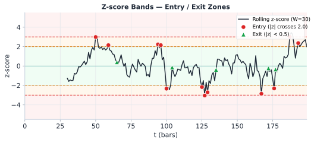
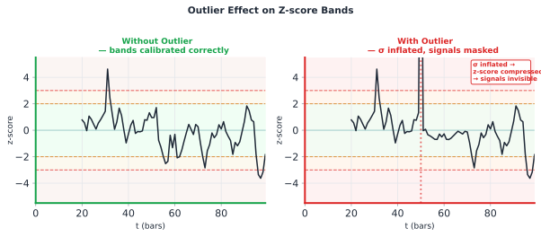

วัดว่า spread ห่างจากค่ากลางแค่ไหน — Standard vs Robust
Key Idea
Z-score converts the spread residual ε into units of standard deviations from the mean, producing a dimensionless signal that drives entry and exit decisions.
The robust version protects against single outliers distorting the signal — critical when exchange glitches or thin-liquidity spikes contaminate the feed.
10.1 Standard Z-Score
Given a rolling window of W observations of the spread residual ε, the standard z-score is:
A common parameterisation uses W = 24 hours of data (e.g. 288 five-minute bars). Entry and exit thresholds map z-score values to actions:
Z-score range
Signal zone
Action
z > 2.0
Strong long signal
Enter long ε (buy cheap leg, sell expensive leg)
1.5 < z ≤ 2.0
Watch zone
Monitor; wait for confirmation
0.5 < z ≤ 1.5
Neutral-high
Hold existing position
−0.5 ≤ z ≤ 0.5
Neutral / exit
Close position (z < 0.5)
−1.5 < z < −0.5
Neutral-low
Hold existing short position
−2.0 < z ≤ −1.5
Watch zone
Monitor short signal
z ≤ −2.0
Strong short signal
Enter short ε (sell cheap leg, buy expensive leg)
|z| > 3.5
Stop-loss zone
Emergency exit — outlier or regime break

Rolling z-score with colored signal bands: RED zone = |z|>3 (stop-loss), AMBER zone = 2<|z|<3 (entry), GREEN zone = |z|<2 (hold/exit). Red dots = entry, green triangles = exit.
10.2 The Outlier Problem
A single extreme observation — a flash crash, exchange glitch, or thin-book spike — can silently corrupt the rolling mean and standard deviation, making the z-score unreliable for all subsequent bars in the window.
Numerical Example
Suppose W = 10 bars with ε values (in %) before the outlier:
ε = [0.10, 0.12, 0.09, 0.11, 0.10, 0.13, 0.08, 0.11, 0.10, 0.12]
θ_clean = 0.106% σ_clean = 0.015%
z for next point ε=0.22%: z = (0.22 - 0.106)/0.015 = 7.6 ← strong signal
Now inject one outlier: replace bar 5 with ε = 0.80% (5σ spike):
ε = [0.10, 0.12, 0.09, 0.11, 0.80, 0.13, 0.08, 0.11, 0.10, 0.12]
θ_dirty = 0.176% σ_dirty = 0.212% ← mean shifted +0.07%, std blown up 14×
z for same ε=0.22%: z = (0.22 - 0.176)/0.212 = 0.21 ← noise, signal gone!
Warning: Outlier Contamination Effect
The outlier moved the mean by +0.07% (+0.47σ of the clean distribution) and inflated σ by roughly 14×. Every subsequent observation now has a z-score compressed toward zero — real signals are suppressed, and the bands become meaningless until the outlier leaves the window.

Left: clean z-score bands — signals visible. Right: one outlier inflates σ by ~14×, compressing all subsequent z-scores toward zero — real signals disappear until the outlier exits the rolling window.
10.3 Robust Z-Score via MAD
The Median Absolute Deviation (MAD) replaces mean and standard deviation with outlier-resistant alternatives:
For a perfectly Normal distribution, MAD × 1.4826 = σ. The constant 1.4826 = 1 / Φ⁻¹(0.75) ≈ 1 / 0.6745 makes MAD a consistent estimator of σ under normality, while remaining robust under contamination. A single outlier cannot materially change the median or MAD — it would need to corrupt more than 50% of the data.
Revisiting the same example with the 5σ outlier injected:
ε = [0.10, 0.12, 0.09, 0.11, 0.80, 0.13, 0.08, 0.11, 0.10, 0.12]
median_ε = 0.11%
deviations from median = [0.01, 0.01, 0.02, 0.00, 0.69, 0.02, 0.03, 0.00, 0.01, 0.01]
MAD = median(deviations) = 0.01%
σ_robust = 0.01 × 1.4826 = 0.01483%
robust_z for ε=0.22%: (0.22 − 0.11) / 0.01483 = 7.42 ← signal preserved!
(vs standard z = 0.21 after outlier contamination)
Result
The outlier moves the median by exactly 0 in this example (median is the middle value of a sorted list). Robust z correctly identifies ε=0.22% as a strong signal (z=7.4), while standard z falsely showed no signal (z=0.21).
10.4 Rolling Window Z-Score
Both standard and robust z-scores must be computed over a rolling window to adapt to changing market regimes. The window length W is a key hyperparameter:
Window W
Adapts to
Lag
Recommended use
4h (48 bars × 5min)
Intraday volatility shifts
Low
High-freq scalping; may over-fit noise
24h (288 bars)
Daily regime, overnight gaps
Medium
Standard for crypto perpetual arb
72h (864 bars)
Multi-day trend cycles
High
Slower strategies; stable but sluggish
168h / 1 week
Weekly seasonality
Very high
Equity stat arb with weekly patterns
Lag Warning During Trend
If the spread drifts monotonically for several hours (e.g. during a BTC rally), the rolling mean θ_W chases the price upward with a lag equal to W/2. This artificially suppresses z-score readings — the strategy may fail to trigger exit on a position that is actually losing value. Consider adding a trend filter or using exponentially-weighted moving averages (EWMA) with λ = 0.94.
10.5 Comparison: Standard vs Robust Z-Score
Property
Standard Z
Robust Z (MAD)
Formula
(ε − mean) / std
(ε − median) / (MAD × 1.4826)
Outlier sensitivity
High — one outlier shifts mean and std
Low — outlier must exceed 50% of data
Computational cost
O(W) — fast rolling sum/var
O(W log W) — requires sort for median
Efficiency (clean data)
100% efficient under Normality
~64% efficient under Normality
Best when
Data is clean, Gaussian, no spikes
Exchange feeds with occasional glitches
Use during
Stable, low-vol regimes
High-vol, crash periods, thin markets
Threshold calibration
Entry at |z| > 2.0
Entry at |z| > 2.0 (same scale by design)
Regime-switching
Bands blow up in crashes
Bands remain stable during crashes
Recommendation
Use Robust Z as default for crypto stat arb on Bybit/Lighter. Fall back to standard z only when your data pipeline has confirmed outlier filtering (e.g. price validated against two independent feeds). Hybrid: use robust z for entry, standard z for exit (since exit thresholds are softer and less sensitive to contamination).
Pseudo-Code
functioncompute_zscore(eps, theta, sigma):
# Standard z-score (single-point, pre-computed θ and σ)if sigma == 0:
return0.0return (eps - theta) / sigma
functionrolling_zscore(eps_series, W):
# Compute standard rolling z-score for full series
z_series = []
for t in range(W, len(eps_series)):
window = eps_series[t-W : t]
theta = mean(window)
sigma = std(window)
z_series.append(compute_zscore(eps_series[t], theta, sigma))
return z_series
functionrobust_zscore(eps_window):
# Compute robust z for the last point in eps_window
med = median(eps_window)
devs = [abs(x - med) for x in eps_window]
mad = median(devs)
sigma_r = mad * 1.4826if sigma_r == 0:
return0.0return (eps_window[-1] - med) / sigma_r
functionchoose_signal(eps_window, W):
# Use both; flag discrepancy
std_z = rolling_zscore(eps_window, W)[-1]
rob_z = robust_zscore(eps_window)
discrepancy = abs(std_z - rob_z)
if discrepancy > 1.5:
log("OUTLIER SUSPECTED — using robust z")
return rob_z, "robust"return std_z, "standard"
Running Example — Bybit BTC-PERP ↔ Lighter BTC-PERP (W = 24h)
Scenario: BTC crashes 12% over 2 hours at 03:00 UTC. Bybit order book thins out. One 5-minute bar records ε = 0.45% (a feed glitch as a single large market order clears thin asks).
Metric
Standard Z
Robust Z
Outcome
Window mean / median
θ = 0.126%
median = 0.10%
Robust unaffected by spike
σ estimate
σ = 0.060% (inflated 4×)
σ_r = 0.015%
Standard σ blown up
Z-score for next bar ε = 0.32%
z = (0.32−0.126)/0.060 = 3.2
z = (0.32−0.10)/0.015 = 14.7
—
Z-score for real signal ε = 0.22%
z = 1.6 (below entry threshold 2.0)
z = 8.0 (strong signal)
Standard misses entry
After outlier leaves window (24h later)
z recalibrates correctly
z unchanged (already correct)
Robust reacts immediately
Decision: During the BTC crash window, use robust z for entry decisions. The standard z produced a false alarm at ε=0.32% (z=3.2 suggesting strong signal, but driven by inflated σ from the spike) and missed the real signal at ε=0.22%. The robust z correctly ranked signals by true deviation from median spread.
บนโต๊ะจริง — Z-Score Calibration ใน Production
30-day rolling window: อย่าใช้ full history — คำนวณ μ และ σ จาก 30 วันย้อนหลังเพื่อให้ responsive ต่อ regime change; re-fit ทุกวันเปิดตลาด
Interpretation: ε=0.11% is exactly at the median — no signal. The outlier at 0.80% had zero effect on this result.
Exercise 10.2 — Discrepancy Between Standard Z and Robust Z
You observe: robust_z = 2.3, standard_z = 4.1. Your entry threshold is |z| > 2.0.
(a) What does the discrepancy of 1.8 σ-units suggest? (b) Should you enter the trade? (c) What additional check would you perform?
Show Answer
(a) Discrepancy interpretation: Standard z is 1.8 units higher than robust z. This is a red flag indicating the rolling standard deviation (σ_stat) is likely inflated by one or more outliers in the window. The mean (θ) may also be shifted upward, causing standard z to overstate the true signal strength.
(b) Should you enter? Yes, but with reduced size. Robust z = 2.3 > 2.0 confirms a genuine signal exists. However, the outlier contamination means the spread's true σ may be smaller than σ_stat suggests, so the edge is more uncertain. Enter at 50% of normal position size.
(c) Additional checks:
Inspect the raw ε window: identify which bar caused the outlier. If it was a known event (funding reset, exchange maintenance), you can safely discard it.
Check the second-level order book depth on Bybit and Lighter — thin books confirm the spike was illusory.
Verify regime state: if regime = Stressed, further reduce size regardless of z-score.